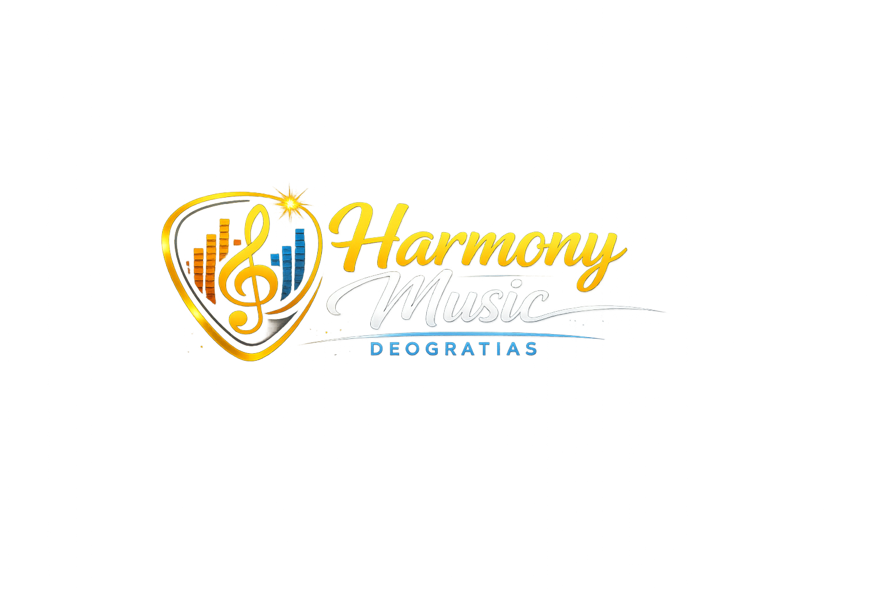

Harmony Music Instruments is a trusted music equipment company dedicated to providing high-quality musical instruments for beginners, students, professionals, churches, schools, and music studios. Our collection includes guitars, pianos, drum sets, keyboards, microphones, speakers, and other professional music accessories. We believe that quality instruments inspire creativity and help musicians achieve their dreams.
To provide affordable, high-quality musical instruments and excellent customer service while supporting music education and talent development.
To become one of the leading suppliers of musical instruments in Tanzania and East Africa.